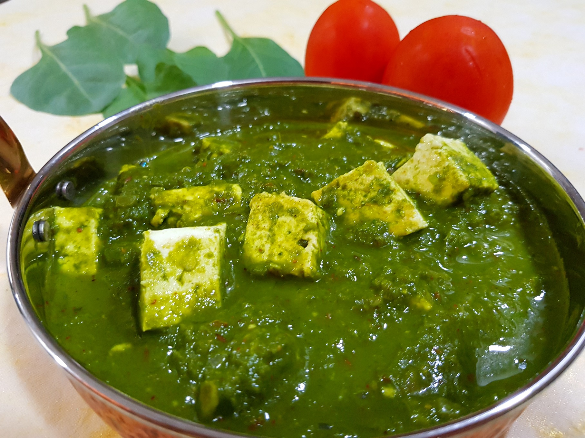

Palak Paneer

Ingredients:
- 200g paneer, cut into cubes
- 200g fresh spinach leaves, washed and chopped
- 2 tablespoons vegetable oil
- 1 onion, finely chopped
- 2 cloves garlic, minced
- 1-inch piece of ginger, grated
- 2 tomatoes, finely chopped
- 1 green chili, chopped (optional)
- 1 teaspoon ground cumin
- 1 teaspoon ground coriander
- 1/2 teaspoon turmeric powder
- 1/2 teaspoon garam masala
- Salt to taste
- 1/4 cup heavy cream (optional)
- Chopped fresh cilantro for garnish
Steps:
- Heat vegetable oil in a large skillet over medium heat. Add the chopped onion and cook until softened, about 5 minutes.
- Add the minced garlic, grated ginger, and chopped green chili (if using), and cook for another 2 minutes.
- Stir in the chopped tomatoes and cook until they soften, about 5 minutes.
- Add the ground cumin, ground coriander, turmeric powder, and garam masala. Cook for 2 minutes, stirring constantly.
- Add the chopped spinach to the skillet and cook until wilted, about 5 minutes.
- Transfer the mixture to a blender or food processor and blend until smooth. You can add a little water if needed to reach your desired consistency.
- Return the mixture to the skillet and add the paneer cubes. Simmer for 5 minutes.
- If using, stir in the heavy cream and simmer for an additional 2 minutes.
- Season with salt to taste.
- Garnish with chopped fresh cilantro before serving.
- Serve hot with rice or naan bread.